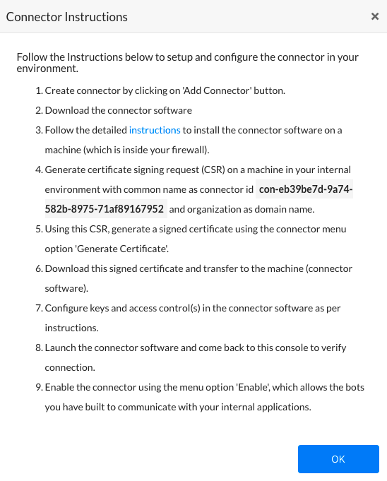
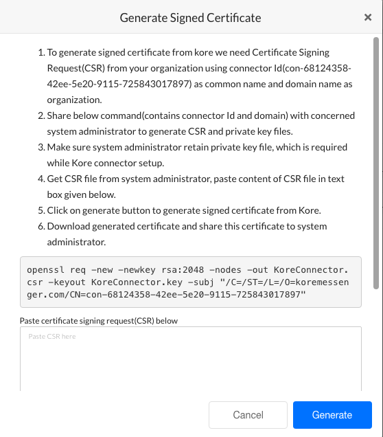
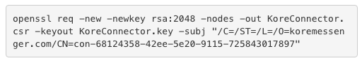
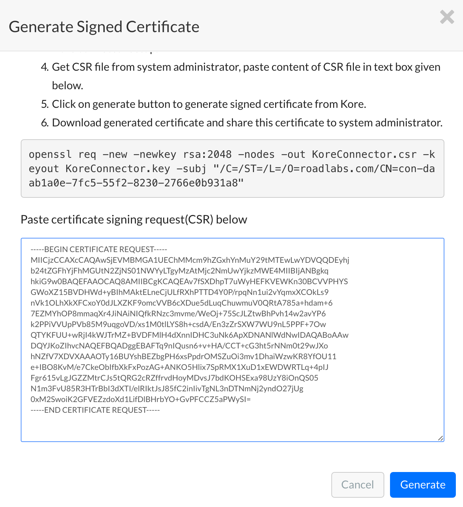
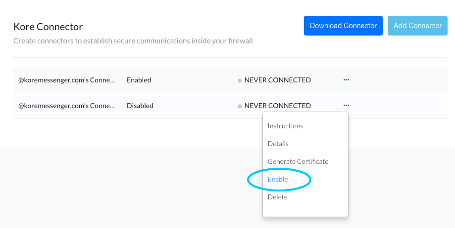

Kore.ai Connector¶
On the Kore.ai Connector page, in the Security & Control module of the Bots Admin Console, you can download and configure the Kore.ai Connector Agent for Bots within your secure company intranet to provide secure communications between the XO Platform in the cloud and your network.
Why Kore.ai Connector?¶
Kore.ai Bots are designed to make updates, provide notifications to users, and perform tasks. The tasks to perform are received from or performed on third-party applications available over the Internet as web-based applications or on-premises bots applications.
In a Kore.ai bots on-premises system, communications security is maintained by restricting users and systems within the company intranet or by configuring specific channels for specific data exchange. On the contrary, Kore.ai Bots reside and process data in the cloud environment and cannot directly connect to your bots' premises applications.
You can use the Kore.ai Connector Agent to establish and maintain secure data connectivity between Kore.ai and your on-premises applications within your intranet.
The Kore.ai Connector is a stand-alone application that is installed and configured within your company intranet configured with restricted and secure connectivity to specified bots applications. The Kore.ai Connector Agent is designed to pass requests for data access between your on-premises applications and Kore.ai to process the specific Bot tasks configured by an end-user with rights and privileges for those applications.
The following illustration shows the Kore.ai Connector page in the Bots Admin Console Security & Control module.
{kind=link}
Kore.ai Connector Page Controls
The following controls are available on the Kore.ai Connector page in the Bots Admin Console.
Download Connector – Click the Download Connector drop-down arrow in and then select one of the following operating systems:
- Windows Based
- Unix/Linux Based
Download the Kore.ai Connector Agent to your default browser downloads directory. Install the agent in your DMZ or Intranet. For more information, see Installing the Kore.ai Connector Agent.
Add Connector – Click to add up to two connectors. After a connector is added, you should install and configure the Kore.ai Connector Agent.
Actions Menu – On the Kore.ai Connector page, against each added connector, click the Ellipsis icon to display the Actions menu to run the following commands:
- Instructions – Displays the Connector Instructions dialog that describes the overall steps to install and configure the Kore.ai Connector Agent.
- Edit – Displays the Connector Details dialog that shows the Kore.ai Connector name, description, ID, status as CONNECTED or DISCONNECTED, and Last Connected date.
- Generate Certificate – Displays the Generate Signed Certificate dialog used to create a .pem file for security along with instructions on how to create the file. For more information, see Installing the Kore.ai Connector Agent.
- Enable/Disable – Click to show the Are you sure you want to enable this connector? dialog. Click Continue to enable the connector. When enabling a connector, any other enabled instances of the Kore.ai Connector Agent are disabled.
- Delete – Click to display the Delete Connector dialog. To permanently delete the connector, click Confirm.
About¶
The Kore.ai Connector is an agent that runs behind your bots firewall within your company Intranet or perimeter network (DMZ) to provide secure data exchange between Kore.ai which operates in the cloud and your on-premises applications.
In the following diagram, end-users configure a Kore.ai Bot that connects to Kore.ai in the cloud. The Kore.ai Bot servers (5) contact the Kore.ai Connector Gateway (2) with the Bot request. The Kore.ai Connector Gateway relays the request to the Kore.ai Connector (3) installed and securely configured in your on-premises Intranet or DMZ to interact with your bots applications. The response from your applications is sent through the Kore.ai Connector back out to the Kore.ai cloud and processed. Optionally, you can enable your on-premises applications to push data, for example, alert messages, to the Kore.ai cloud using webhooks.
{kind=link}
How it Works
After you install the Kore.ai Connector in your network, you configure the agent with details to specifically access, communicate, and request or post data to the bots application you define.
When started, the Kore.ai Connector Agent initiates a persistent SSL connection with Kore.ai and monitors requests for data transfer to or from your bots applications and Kore.ai. If the persistent connection is broken, the Kore.ai Connector automatically attempts to reestablish communication. You can monitor connectivity directly in the Bots Admin console.
Installing¶
This topic describes how to install and configure the Kore.ai Connector Agent for Kore.ai Bots that you can use to securely connect the cloud-based XO Platform to your on-premises applications in your company Intranet.
Prerequisites
To install the Kore.ai Connector, you should review the following hardware and software requirements.
Hardware Requirements
The server hosting the Kore.ai Connector Agent should have:
RAM: 4 GB
CPU Core: 8
Hard disk space: 10 GB
To support the following:
- Kore.ai Connector download – 10MB
- Installation Files – 20MB
- Logging and Configuration Files – < 5GB
Software Requirements
The Kore.ai Connector supports both Windows and Linux operating systems as follows:
Linux/Unix
The following Red Hat® Enterprise Linux® versions are supported:
- RHEL 7.x or higher
- RHEL 5 (32-bit and 64-bit)
- RHEL 6 (32-bit and 64-bit)
- RHEL 7 (64-bit)
The following CentOS versions are supported:
- CentOS 7.x or higher
- CentOS 5 (32-bit and 64-bit)
- CentOS 6 (32-bit and 64-bit)
- CentOS 7 (64-bit)
Node.js (version 10 or higher) – Required to run the Kore.ai Connector Agent. Download and install from https://nodejs.org/en/download/ on the server where the Kore.ai Connector Agent is installed.
Windows
The following Microsoft Windows 64-bit operating systems are supported:
- Windows 7 (64-bit)
- Windows 8.1 (64-bit)
- Windows 10 (64-bit)
- Windows Server 2008 R2 (64-bit)
- Windows Server 2012 (64-bit)
- Windows Server 2012 R2 (64-bit)
Node.js – Required to run the Kore.ai Connector Agent. Download and install from https://nodejs.org/en/download/ (version 10 or higher)on the server where the Kore.ai Connector Agent is installed. In addition, you must also install the forever module. After node.js is installed, run the following command to install the forever module:
npm install forever -g
Installation Process
This section describes the installation and configuration of your application server where the Kore.ai Connector Agent is installed, the configuration required in the Bots Admin Console, and finally, enabling enterprise Bots for the Kore.ai Connector Agent and deploying the upgraded Bots for enterprise users.
Adding¶
In the Bots Admin Console, you begin by adding a connector. When you add a connection, a unique ID is created for your company and your unique Kore.ai Connector.
- In the Bots Admin Console, in the Security & Control module, on the Kore.ai Connector page, click Add Connector. The Add Connector dialog is displayed.
- Optionally, in the first field, edit the name of the connector, and then enter a Description for the connector in the second field.
-
Click Add. The Connector Instructions dialog is displayed as shown in the following illustration.
 -
In the Connector Instructions dialog, click OK. The Kore.ai Connector page is displayed.
-
In the Download Connector drop-down list, select you operating system and download the Kore.ai Connector Agent compressed file, one of:
- Linux/Unix – kore-connector-1.0.0.tar.gz
- Windows – kore-connector-1.0.0.zip
-
Copy, and then uncompress the file to your application server.
-
For Linux, use the following command: `tar -xvf kore-connector-X.X.X.tar.gz
-
For Windows, in File Explorer, right-click the file and select Extract to on the command menu.
-
{kind=link}
The Kore.ai Connector Agent file is uncompressed into the following directory structure.
{kind=link}
Generating a Signed Security Certificate
For secure data exchange between the Kore.ai servers in the cloud and your intranet, you need to generate a signed security certificate. First, create a .csr file on your application server using the command displayed in the Bots Admin Console, and then paste the content of the .csr file into the Generate Signed Certificate dialog. The .csr content is used to generate and download the .pem file. You will then copy the .pem file back to the Kore.ai Connector Agent installed on your application server.
- In the Bots Admin Console, in the Security & Control module, on the Kore.ai Connector page, click the Ellipsis icon.
-
On the Actions menu, click Generate Certificate. The Generate Signed Certificate dialog is displayed as shown in the following illustration.
 -
Review the instructions, and then copy your custom command displayed after step 6 in the instructions as shown in the following illustration.
 -
Paste and run the command on your application server within your company intranet in the /Credentials directory created when you installed the Kore.ai Connector Agent.
-
In the /Credentials directory, the Kore.aiConnector.csr file is created, along with the Kore.aiConnector.key file. Open the Kore.aiConnector.csr file using a text editor, and copy the entire contents of the file, and then paste the contents into the Certificate signing request field in the Generate Signed Certificate dialog as shown in the following illustration.
 -
Click Generate. The Download Certificate and View Certificate buttons are displayed.
- Click Download Certificate. The Kore.aiConnectorCert.pem file is downloaded to your local computer browser default downloads folder.
- Copy the Kore.aiConnectorCert.pem file to the /Credentials folder created when you installed the Kore.ai Connector on your application server.
{kind=link}
{kind=link}
{kind=link}
Your security files are in-place on the application server.
Configuring¶
After you install the Kore.ai Connector Agent software, you must verify or set the properties for:
- Certificate Information – See
credentialsin the connectorconfig.json file. - Log Directories – See
loggerin the connectorconfig.json file. - Cluster Environment – See
clusterin the connectorconfig.json file. - Proxy Control for Outbound Connections – See
tunnelin the connectorconfig.json file. - Access Control for Enterprise Applications – See the accesscontrol.json file.
Default Configuration Settings – connectorconfig.json
This section shows the default configuration settings for certificate information, logging, and cluster mode settings in the < Kore.ai Connector agent Installation Path >/config/connectorconfig.json file:
{
"credentials":{
"key":"./credentials/Kore.aiConnector.key",
"cert":"./credentials/Kore.aiConnectorCert.pem",
"ca":"./credentials/ca.crt"
},
"logger":{
"applogs":{
"path":"./logs",
"level":"info"
},
"auditlogs":{
"path":"./audits",
"level":"info"
}
},
"cluster":{
"enabled":true,
"workers":2
}
}
Certificate Information
You may want to store the security keys for the Kore.ai Connector Agent in another location other than the installation directory for the Kore.ai Connector Agent. You can move the credential files to another directory on the application server or another server in the network and specify the relative or absolute path in the credentials section in the connectorconfig.json file that contains the following parameters:
key– The client certificate. Default setting is:./credentials/Kore.aiConnector.keycert– The .pem file generated in the Bots Admin Console. Default setting is:./credentials/Kore.aiConnectorCert.pemca– Installed as part of the Kore.ai Connector Agent. Default setting is:./credentials/ca.crt
Logging Configuration
The Kore.ai Connector Agent generates two logging files at runtime:
-
kore-connector.log.< dd-MM-yyyy > – Application logging events to include:
- Connector status – Any change in status such as agent start or stop is added as a log entry.
- Errors – Any error message for the agent is captured in the app.log file.
-
kore-connector-audit.log.< dd-MM-yyyy > – Audit logging events.
- Configuration changes – Any changes in connectorconfig.json file and accesscontrol.json file. The original file is backed up automatically and a log entry is made.
- Requested URLs – All requested URLs coming into the Kore.ai Connector are captured as a log entry.
By default, logging files for the application and auditing logs are created and stored in the default installation pat in the < Kore.ai Connector Agent Installation Path >/logs and < Kore.ai Connector Agent Installation Path >/audits. You can specify another directory on the application server or another server in the network and specify the full path. You can also increase or decrease the logging levels as needed for either logging file as:
- fatal – Any error that is forcing a shutdown of the service or application to prevent data loss or further data loss. Occurs only once in a process and is usually the last entry in a log.
- critical – An error which requires immediate investigation that has not yet shut down a service or application, but is likely to do so.
- error – Any error which is fatal to the current operation but not fatal to the service or application, for example, cannot open a file, missing file, or missing data. This type of errors usually requires administrator intervention.
- warn – Anything that can potentially cause application abnormalities with the ability to recover, for example, switching from a primary to backup server, retrying, or missing secondary data.
- info – General information about normal application operations such as start and planning stopping of service, configuration assumptions, and so forth. This is the default setting for the Kore.ai Connector Agent.
- debug – Diagnostic information, usually for system administrators and IT personnel.
- trace – All operational information, for example, parts of a function.
Each log level below fatal includes the information from any logging level above. For example, the default level as info includes all the information for fatal, critical, error, warn, and info in the log file.
Scalability and Cluster Configuration
The Kore.ai Connector Agent is scalable to handle the request load as required. When you install the Kore.ai Connector Agent, cluster mode settings are enabled by default, with 2 workers, or CPUs, set for use.
For increased load handling for requests by the Kore.ai Connector Agent, you may want to enable more workers. If you do not want to use cluster mode, set the “enabled” property to false.
You can also run cloud connectors in more than one server to meet failover as well as scalability requirements. Certificate and other configurations will remain same. Cloud Connector is a client which makes outboud connection to Kore.ai Cloud Gateway. When more than one connectors are connected, Cloud Gateway will distribute the load to the connectors.
Proxy Control for Outbound Connections
You can configure outbound proxy settings for the Kore.ai Connector Agent in the < Kore.ai Connector agent Installation Path >/config/connectorconfig.json file. This configuration is optional unless all of your outbound data is routed through a proxy server. To configure outbound proxy settings, add the following configuration shown as the entry labeled tunnel_ _in the following configuration sample:
{
"credentials":{
"key":"./credentials/Kore.aiConnector.key",
"cert":"./credentials/Kore.aiConnectorCert.pem",
"ca":"./credentials/ca.crt"
},
"logger":{
"applogs":{
"path":"./logs",
"level":"info"
},
"auditlogs":{
"path":"./audits",
"level":"info"
}
},
"cluster":{
"enabled":true,
"workers":2
},
"tunnel":{
"proxyHost":"hostname",
"proxyPort":"portnumber"
}
}
Access Control for Applications
The Kore.ai Connector Agent requires an explicit set of white-listed URLs to access specific applications on your company intranet. Any other HTTP requests are denied by the Kore.ai Connector. You must configure access control for each bot application that will use the Kore.ai Connector Agent in the accesscontrol.json file in the Kore.ai Connector installation directory in the …/config/configs directory with the following parameters:
- virtualhost – Specify the virtual host name exactly as specified in the Request URL property in the Set Up Request Chain dialog while configuring on-premises bots in the Bot Builder tool. For more information, see Defining a Request Chain Object in the Bot Builder documentation.
- virtualport – Specify the virtual port exactly as specified in the Request URL property in the Set Up Request Chain dialog while configuring on-premises bots in the Bot Builder tool. For more information, see Defining a Request Chain Object in the Bot Builder documentation.
- internalhost – Specify the actual host name of the on-premises enterprise application used for data exchange with your Bots.
- internalport – Specify the actual port of the on-premises enterprise application used for data exchange with your Bots.
- protocol – Specify HTTP or HTTPS for the connection to on-premises enterprise applications.
- allowedPaths – Specify all paths as “/*” or a specific array of paths for the host, not to include any parameters. The Kore.ai Connector checks the path up to, but not including parameters beginning with " ? "
The following image is an example of a configured accesscontrol.json file with four Bot configurations.
{kind=link}
Note
Comments cannot be used in configuration files.
Starting¶
This section describes how to start or stop the Kore.ai Connector Agent on Windows or Linux operating systems.
Linux/Unix Operating Systems
On Linux operating systems, you can manually start the Kore.ai Connector Agent, or configure the Kore.ai Connector Agent to autostart on boot.
Manually Starting/Stopping the Kore.ai Connector on Linux
Manually start or stop the Kore.ai Connector Agent on the Linux/Unit application server by running the following commands in the Kore.ai Connector installation directory, and check the status as follows:
The following image shows the response for a successful start and status check of the Kore.ai Connector.
{kind=link}
Configuring Kore.ai Connector for Autostart on Linux
This section describes how to set the Kore.ai Connector Agent to automatically start when the Linux server is started or rebooted.
To configure the autostart for the Kore.ai Connector Agent, on the application server, in the …/etc/rc.local file, add the following command:
cd <Kore.ai Connector Installation Root> ; ./koreconnector.sh start
For example:
cd /home/CompanyAdmin/kore-connector ; ./koreconnector.sh start
Windows Operating Systems
On Windows operating systems, you can manually start or stop the Kore.ai Connector Agent, and check the status of the Kore.ai Connector Agent.
Manually Starting/Stopping the Kore.ai Connector on Windows
Manually start or stop the Kore.ai Connector Agent on the Windows application server by running the following commands in the Kore.ai Connector installation directory, and check the status as follows:
Enabling Bots¶
In this section, you can verify the connection to the Kore.ai Connector Agent in the Bots Admin Console, and then enable the connection. When the connection is enabled, you can modify your custom Bots in the Bot Builder tool to use the Kore.ai Connector, publish those Bots, and then in the Bots Admin Console, deploy the published Bots and assign the Bots to users in your company.
-
In the Bots Admin Console, in the Security & Control module, on the Kore.ai Connector page, verify the Kore.ai Connector status as CONNECTED, click the Ellipsis icon, and then on the Actions menu, click Enable as shown in the following illustration.
 -
In Bot Builder, for each Bot task that you want to run using the Kore.ai Connector, clone or upgrade each Bot.
-
In the Set up Request Chain Object dialog, select Access using connector, save the changes, and then publish the Bot. For more information about configuring the request object, see Configuring an Alert Task Request Object in the Bot Builder tool documentation.
Note: The option in the Set up Request Chain Object dialog for Access using connector is only available after the Kore.ai connector is enabled in the Bots Admin Console.
-
-
In the Bots Admin Console, deploy the published Bot and assign the users that can use the Bot tasks in your enterprise. For more information, see Bot Management.
{kind=link}
After the Kore.ai Connector is installed on your application server, enabled in Bots Admin Console, and your Bots customized to use the connector, you only need to monitor the status of your connector in the Bots Admin Console. If you cannot start the Kore.ai Connector, or customers are reporting errors, you may need to reconfigure Kore.ai Connector settings.
Troubleshooting¶
Installing and configuring the Kore.ai Connector Agent involves many steps. And even after installation, you may need additional configuration to maintain connectivity between Kore.ai Bots and your on-premises applications. This topic describes some of the typical issues that may arise, and how to handle those issues.
Kore.ai Connect Agent Server Issues
Kore.ai Connector Fails to Start
Log Error Message: TypeError: Object #<Object> has no method ‘parse’ Solution: The server may have multiple node.js installations with different versions. You may need to specify which node.js version to run. To check for versions, run the following command:
nvm list
This command may return:
To set the version to use, run the following command:
nvm use v4.0.0
The command should return:
Now using node v4.0.0
Client Issues
Users in your organization may experience connectivity issues with the Kore.ai Connector.
-
Error Message: “< Enterprise application >” is not reachable. Unable to communicate with the connector. Please try again.
- Solution: The “virtualhost” entry in the < Kore.ai Connector Install Dir >/config/configs/accesscontrol.json file is not defined, or is incorrectly configured. Verify the entry.
-
Error Message: The server returned an error. Try again later. (404 – System not reachable).
- Solution: Connectivity between the Kore.ai Connector on your application server and the Kore.ai Gateway is broken. The Kore.ai Connector Agent may have stopped running. You may need to restart the Kore.ai Connector on the application server.
If you cannot resolve your issue, contact Kore.ai Support.